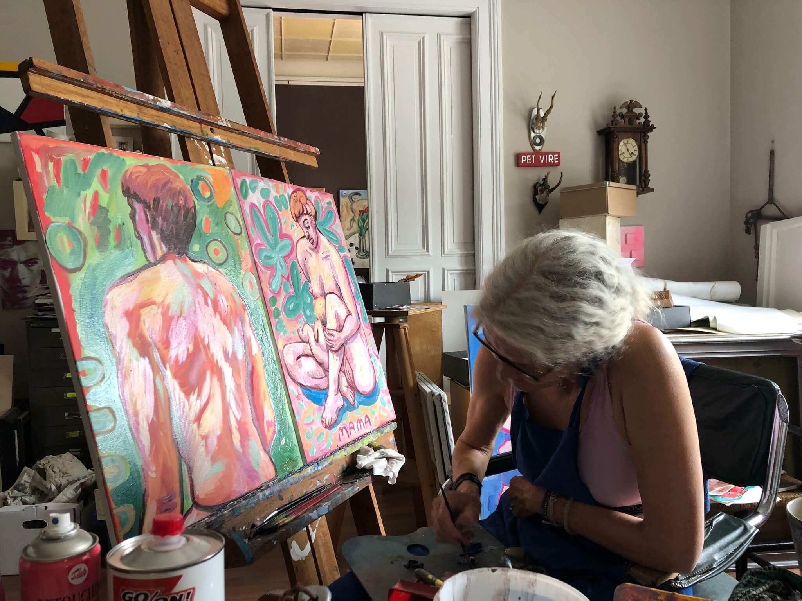
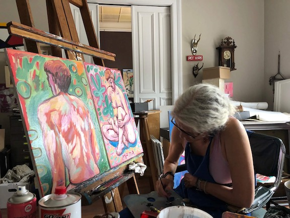

Julia Waller, born Schenck
Julia was born in 1963 in Karlsruhe. Grew up in Spain, Mexico, Germany and Canada. Completed her Bachelor of Fine Arts at the University of Western Washington in Bellingham and UBC, Vancouver. She then attended the Emily Carr College of Art and Capilano College where she attained her Diploma as a Graphic Designer. She moved back to Germany in 1989 and married Dr. Detlef Waller with whom she happily raised four children. In Lübeck she developed a profound understanding of life sculpture with Sven Schöning. Her passion for life drawing and sculpture developed into a more expressive and experimental style after her move to Hamburg and work with the sculptor Pom. A new graphic immediacy has emerged through the collaboration with Marc Fox as a color editor, these can be seen in the digital drawings. She continues to work independently at her art and keeps exploring her creative nature. Her Instagram posts provide a daily showcase of the latest works.

+49 176 242 585 50
Instagram: julia_waller_arts